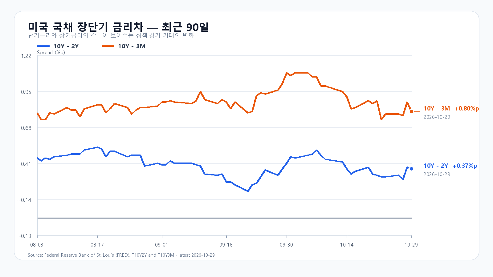
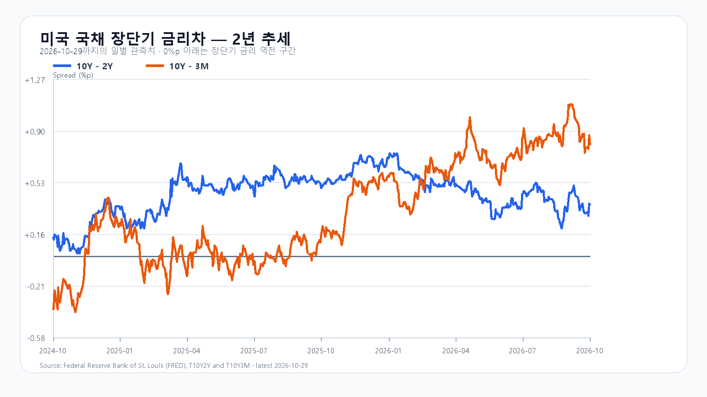

KOSPI가 5,937.66으로 1.24% 하락한 뒤 미국 기술주도 밀렸습니다. Amazon은 클라우드 매출을 크게 늘렸지만 AI 인프라 지출이 현금흐름을 압박했습니다. 오늘은 성장률보다 그 성장을 뒷받침하는 비용과 국내 반도체 매수세가 관건입니다.
클라우드 성장과 현금 지출의 간격
Amazon의 3분기 AWS 매출은 460억달러로 전년보다 39.3% 증가했습니다. 최근 12개월 잉여현금흐름은 마이너스 424억달러였습니다. 연간 현금 설비투자 계획 2,200억달러는 유지됐습니다. 지출 확대를 이미 예상했어도 현금 회수까지의 시간이 길어지면 주가에는 부담이 됩니다. Amazon 실적
Intel 전망 부진에 커진 반도체 매도
Intel은 4분기 매출을 150억~160억달러, 조정 주당순이익을 0.25달러로 제시했습니다. 서버용 Xeon 수요가 견조하다는 설명에도 PC 업계의 역풍이 부담으로 남았습니다. 시간외 매도는 AMD와 Nvidia, Micron 등으로 번졌습니다. Intel 실적 발표
반도체 약세와 물가 부담
미국 정규장에서 SOXX는 1.55%, SMH는 1.06% 내렸고 Micron은 4.98% 하락했습니다. 미국 3분기 GDP는 연율 3.4% 성장했고 9월 PCE 물가는 전월보다 0.5%, 전년보다 3.6% 올랐습니다. 견조한 성장과 높은 물가가 함께 나타나면서 금리 부담도 이어집니다. BEA 발표
전일 한국장에 반영된 Alphabet 실적 우려와 미국장의 후행 반응을 다시 같은 크기의 충격으로 더할 수는 없습니다. 한국장 마감 뒤 나온 Amazon 실적과 시간외 반도체 약세가 오늘 새로 소화할 변수입니다. 메모리 현물 가격과 주식의 투자비·할인율 부담은 별도로 봐야 합니다.
5,900선과 외국인 매수 복귀
기본 종가 범위는 5,750~5,950(45%)입니다. 5,950선을 넘고 외국인·프로그램이 함께 순매수하면 5,950 초과~6,100(15%)을 봅니다. 5,750선 아래에서 매도가 동행하면 5,550~5,750 미만(40%)으로 낮춰 봅니다. 기본 범위를 이탈하면 해당 판단은 무효이며 다음 확인은 09:30, 10:00, 14:00입니다.
KODEX 레버리지는 75,200원을 첫 지지, 78,550원을 반등 기준, 80,595원을 저항으로 봅니다. 75,200원을 이탈한 뒤 회복하지 못하면 지지 판단을 접습니다. 공격 5·관망 40·방어 55로 두고, 환율 상승과 미국 선물 약세가 국내 반도체 매도로 이어지는지 확인합니다. 오늘 21:30 KST 미국 고용비용지수도 금리 기대에 영향을 줄 일정입니다.
장전 시세
| 항목 | 최근값 | 원천 시각 |
| 삼성전자 NXT (OPEN) | 220,000원 · -5.17% | 2026-10-30T08:04:05.854549+09:00 |
| SK하이닉스 NXT (OPEN) | 1,433,000원 · -6.09% | 2026-10-30T08:04:05.854558+09:00 |
| 하나은행 USD/KRW 고시 | 1,340.50원 | 2026-10-30T07:32:15+09:00 |
| NQF 최근 거래 | 29,044.75 | 2026-10-30T07:54:00+09:00 |
| ESF 최근 거래 | 7,697.50 | 2026-10-30T07:54:02+09:00 |
| CLF 최근 거래 | 102.82 | 2026-10-30T07:54:01+09:00 |
| BZF 최근 거래 | 111.50 | 2026-10-30T07:52:19+09:00 |
미국 시간외 최근 거래
| 종목 | USD | 종가 대비 | 원천 시각 |
| NVDA | 208.58 | -2.38% | 2026-10-30T08:00:12+09:00 |
| AMD | 529.40 | -6.54% | 2026-10-30T08:00:10+09:00 |
| MU | 896.50 | -4.04% | 2026-10-30T08:00:09+09:00 |
| AVGO | 333.78 | -3.25% | 2026-10-30T08:00:04+09:00 |
미국 정규장
| 종목 | 종가 USD | 등락 |
| QQQ | 715.34 | -1.42% |
| TQQQ | 69.26 | -4.28% |
| SOXX | 513.86 | -1.55% |
| SMH | 561.67 | -1.06% |
| NVDA | 213.66 | -0.80% |
| AMD | 566.42 | -2.08% |
| MU | 934.27 | -4.98% |
| AVGO | 345.00 | -1.94% |


연준 10월 결정 · Microsoft 실적 · Alphabet SEC 실적 · DRAM 현물 · 미국 시세 · 국내 일봉 · BEA 일정